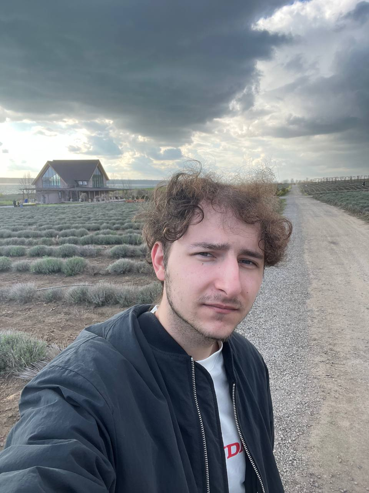
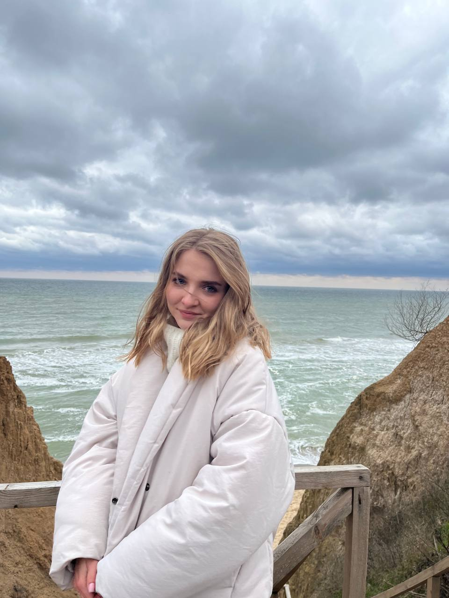

Привет! Меня зовут Даниил
Мне 24 года, я живу в прекрасном городе Одесса, прячусь от тцк, играю на гитаре, и учусь тестированию. Люблю ценить простые моменты, открывать новые места и наполнять жизнь яркими впечатлениями.
Одно из моих главных увлечений — фотография. Больше всего мне нравится снимать пейзажи: море, небо, закат и природу. В таких кадрах всегда есть настроение, которое хочется сохранить.
Мои интересы
- Путешествия — люблю дорогу, новые маршруты и места, куда хочется возвращаться.
- Автомобиль — у меня есть своя машина, и поэтому я как молния маквин .
- Бильярд — отличный способ отдохнуть, пообщаться и потренировать точность.
- Жизнь — люблю наслаждаться каждым днём и находить радость в мелочах.
Человек, который мне очень дорог
В моей жизни есть Яночка. Я очень её люблю и ценю время, проведённое вместе. Она делает мои дни теплее и особеннее.

Яночка - мой любимый человечек.